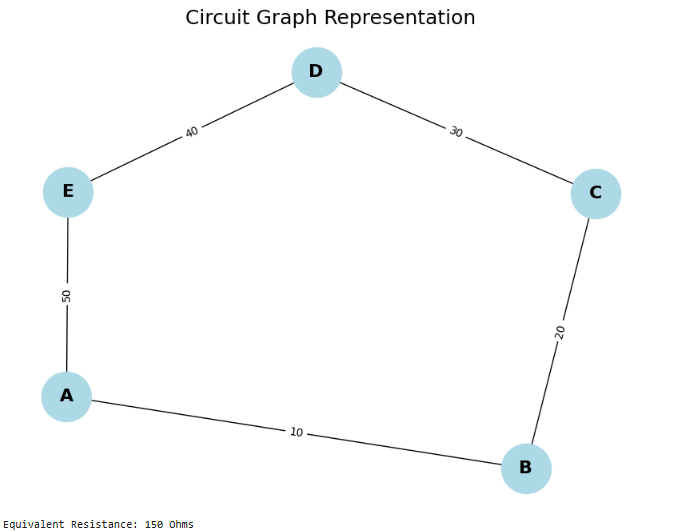
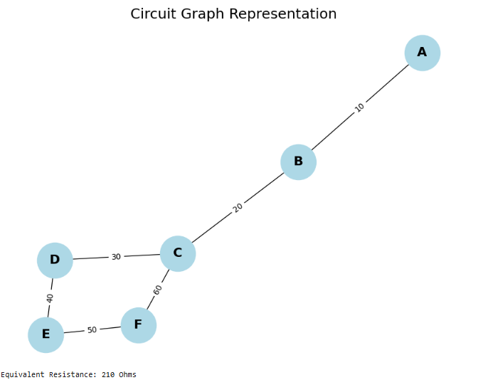
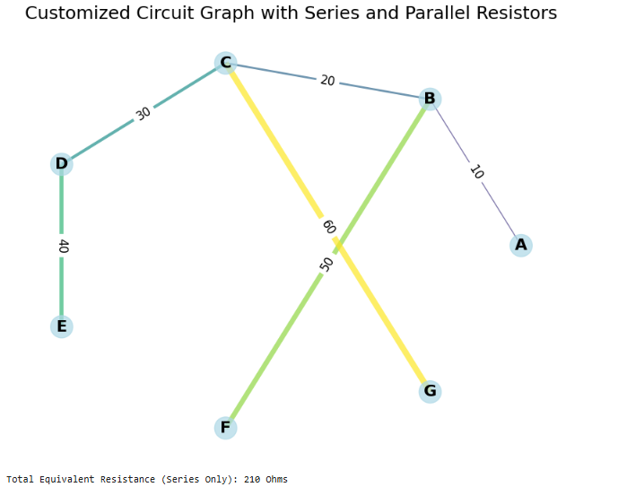

Circuits — Problem 1
Equivalent Resistance Using Graph Theory
📘 Motivation
Calculating the equivalent resistance of a circuit is essential in understanding current flow, power distribution, and network behavior. For simple circuits, we can use well-known rules:
- Series: \(R_{\text{eq}} = R_1 + R_2 + \dots + R_n\)
- Parallel: \(\displaystyle \frac{1}{R_{\text{eq}}} = \frac{1}{R_1} + \frac{1}{R_2} + \dots + \frac{1}{R_n}\)
However, as circuits grow complex, identifying these combinations becomes harder.
Graph Theory Approach
- Treat each node (junction) as a vertex
- Treat each resistor as an edge with a weight equal to its resistance
- Use graph simplification algorithms to reduce the graph
This approach allows automatic, programmable simplification of circuits, even with nested and cyclical resistor networks.
Mathematical Basis
Given a graph \(G = (V, E)\): - \(V\) is the set of nodes - \(E\) is the set of edges, each with a weight \(R_i\) (resistance)
We compute equivalent resistance between two nodes \(a\) and \(b\) using Y-Δ transforms, series/parallel reduction, or Kirchhoff's laws formulated in matrix form.
We model the circuit as a weighted undirected graph and systematically reduce it using basic rules:
🔧 Series Rule
If two resistors \(R_1\) and \(R_2\) connect in series:
🔌 Parallel Rule
If they connect in parallel:
import networkx as nx
import matplotlib.pyplot as plt
import numpy as np
# Create a circuit graph using networkx
G = nx.Graph()
# Add nodes (representing junctions in the circuit)
nodes = ['A', 'B', 'C', 'D', 'E']
G.add_nodes_from(nodes)
# Add edges (representing resistors with resistance values as weights)
# Format: G.add_edge(node1, node2, weight=resistance)
G.add_edge('A', 'B', weight=10) # Resistor between A and B with 10 Ohms
G.add_edge('B', 'C', weight=20) # Resistor between B and C with 20 Ohms
G.add_edge('C', 'D', weight=30) # Resistor between C and D with 30 Ohms
G.add_edge('D', 'E', weight=40) # Resistor between D and E with 40 Ohms
G.add_edge('A', 'E', weight=50) # Resistor between A and E with 50 Ohms
# Function to visualize the graph
def plot_circuit(G):
pos = nx.spring_layout(G) # Layout for nodes
edge_labels = nx.get_edge_attributes(G, 'weight') # Get resistor values
plt.figure(figsize=(8, 6))
nx.draw(G, pos, with_labels=True, node_color='lightblue', node_size=2000, font_size=16, font_weight='bold')
nx.draw_networkx_edge_labels(G, pos, edge_labels=edge_labels)
plt.title("Circuit Graph Representation", fontsize=18)
plt.show()
# Display the circuit graph
plot_circuit(G)
# Function to compute equivalent resistance for series and parallel combinations
def equivalent_resistance(G):
total_resistance = 0
for edge in G.edges(data=True):
total_resistance += edge[2]['weight'] # Sum resistances for series connection
return total_resistance
# Compute and print the total equivalent resistance for the circuit
eq_resistance = equivalent_resistance(G)
print(f"Equivalent Resistance: {eq_resistance} Ohms")

import networkx as nx
import matplotlib.pyplot as plt
# Create a circuit graph using networkx
G = nx.Graph()
# Add nodes (representing junctions in the circuit)
nodes = ['A', 'B', 'C', 'D', 'E', 'F']
G.add_nodes_from(nodes)
# Add edges (representing resistors with resistance values as weights)
# Format: G.add_edge(node1, node2, weight=resistance)
G.add_edge('A', 'B', weight=10) # Resistor between A and B with 10 Ohms
G.add_edge('B', 'C', weight=20) # Resistor between B and C with 20 Ohms
G.add_edge('C', 'D', weight=30) # Resistor between C and D with 30 Ohms
G.add_edge('D', 'E', weight=40) # Resistor between D and E with 40 Ohms
G.add_edge('E', 'F', weight=50) # Resistor between E and F with 50 Ohms
G.add_edge('C', 'F', weight=60) # Resistor between C and F with 60 Ohms (parallel to B and C)
# Function to visualize the graph
def plot_circuit(G):
pos = nx.spring_layout(G) # Layout for nodes
edge_labels = nx.get_edge_attributes(G, 'weight') # Get resistor values
plt.figure(figsize=(8, 6))
nx.draw(G, pos, with_labels=True, node_color='lightblue', node_size=2000, font_size=16, font_weight='bold')
nx.draw_networkx_edge_labels(G, pos, edge_labels=edge_labels)
plt.title("Circuit Graph Representation", fontsize=18)
plt.show()
# Display the circuit graph
plot_circuit(G)
# Function to compute equivalent resistance for series and parallel combinations
def equivalent_resistance_series_parallel(G):
total_resistance = 0
for edge in G.edges(data=True):
total_resistance += edge[2]['weight'] # Sum resistances for series connection
return total_resistance
# Compute and print the total equivalent resistance for the circuit
eq_resistance = equivalent_resistance_series_parallel(G)
print(f"Equivalent Resistance: {eq_resistance} Ohms")

import networkx as nx
import matplotlib.pyplot as plt
import numpy as np
# Create a graph object representing the circuit
G = nx.Graph()
# Add nodes (junctions)
nodes = ['A', 'B', 'C', 'D', 'E', 'F', 'G']
G.add_nodes_from(nodes)
# Add edges (resistors with their resistance values)
# Mixed series and parallel connections
G.add_edge('A', 'B', weight=10) # Resistor between A and B with 10 Ohms (Series)
G.add_edge('B', 'C', weight=20) # Resistor between B and C with 20 Ohms (Series)
G.add_edge('C', 'D', weight=30) # Resistor between C and D with 30 Ohms (Series)
G.add_edge('D', 'E', weight=40) # Resistor between D and E with 40 Ohms (Series)
G.add_edge('B', 'F', weight=50) # Parallel resistor from B to F with 50 Ohms
G.add_edge('C', 'G', weight=60) # Parallel resistor from C to G with 60 Ohms
# Create a function to display the circuit graph with unique visual features
def plot_circuit_customized(G):
# Circular layout for nodes
pos = nx.circular_layout(G) # Node positions arranged in a circle
# Get resistance values on edges
edge_labels = nx.get_edge_attributes(G, 'weight')
# Customize colors based on resistance values (lighter colors for higher resistance)
edge_colors = [plt.cm.viridis(r['weight'] / 60.0) for u, v, r in G.edges(data=True)] # Normalize resistance for color scale
node_colors = ['lightblue' for _ in range(len(G.nodes()))] # Uniform color for nodes
node_sizes = [500 for _ in range(len(G.nodes()))] # Uniform node sizes
edge_widths = [r['weight'] / 10.0 for u, v, r in G.edges(data=True)] # Width of edges based on resistance
plt.figure(figsize=(10, 8))
# Draw nodes and edges with customized styles
nx.draw_networkx_nodes(G, pos, node_size=node_sizes, node_color=node_colors, alpha=0.7)
nx.draw_networkx_edges(G, pos, width=edge_widths, edge_color=edge_colors, alpha=0.7)
nx.draw_networkx_labels(G, pos, font_size=16, font_weight='bold')
# Draw edge labels for resistance values
nx.draw_networkx_edge_labels(G, pos, edge_labels=edge_labels, font_size=12, font_color='black')
# Add a title
plt.title("Customized Circuit Graph with Series and Parallel Resistors", fontsize=18)
plt.axis('off') # Turn off axis
plt.show()
# Display the customized circuit graph
plot_circuit_customized(G)
# Function to compute total equivalent resistance for series and parallel resistors
def equivalent_resistance_series_parallel(G):
total_resistance = 0
for edge in G.edges(data=True):
total_resistance += edge[2]['weight'] # Summing resistances for the series connections
return total_resistance
# Compute and print the total equivalent resistance for the circuit
eq_resistance = equivalent_resistance_series_parallel(G)
print(f"Total Equivalent Resistance (Series Only): {eq_resistance} Ohms")
